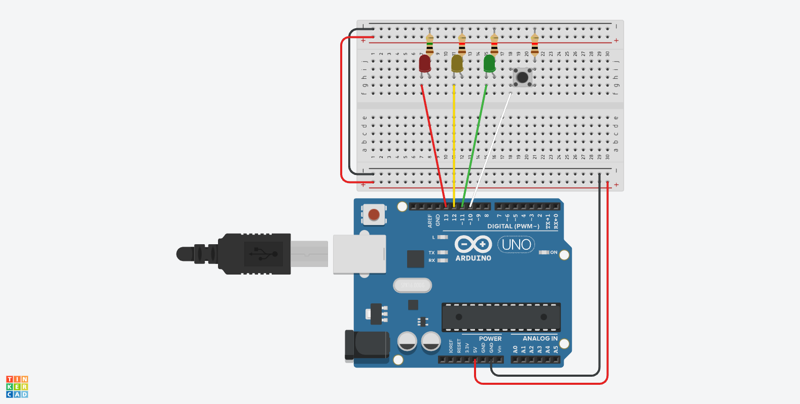

Week 5: Microcontroller Programming
Programming LEDs in Sequence
Having tinkered with Arduino - and some JavaScript - before, I was excited by the prospect of diving right into object-oriented programming and attempting to synchronize multiple elements within one board. When working on the lab exercises, I conjured the idea of programming an Arduino "traffic light" with green, yellow, and red LEDs. My initial goal was to align the sequence of lights with the servo motor's speed, such that the motor would move fast during the green light, slow down during the yellow light, and stop during the red light.

Initial LED Tests
The lab materials were helpful in understanding how to sequence LED lights. Before reviewing
a tutorial, I was able to program the red, yellow, and green LEDs to blink in sequence.
However, since many of these examples used the delay() function, I wanted to try using millis()
and class constructors.


Learning the Logic
As I searched for resources for how to time the LED and motor movement together, I came across a tutorial that built out a traffic light example in C++ at several levels of abstraction. Their process was similar to the examples from class, so I decided to give it a go. I coded along with the instructor, who ultimately taught me how to use a button to initialize the traffic light. Their logic was similar to when a pedestrian presses the crosswalk button and the stop light slows down traffic so they can cross the street.
- Green LED is already on (base state).
- User presses the button, inferring change.
- Green LED turns off, yellow LED turns on (quickly).
- Yellow LED turns off, red LED turns on (delayed).
- Red LED turns off after delay, green LED turns on.
Arduino Schematic
Most Recent Demo

Setting the Timer
The timer code initialized a timer when the button is pressed, employing variables that drive the LED light sequence.
#ifndef _TIMER_H_
#define _TIMER_H_
class Timer {
// define timer start time and target time
// use these values to intiate the loop
long timerStart = 0;
long timerTarget = 0;
public:
// function to begin the timer using millis()
void startTimer(int msec) {
timerStart = millis();
timerTarget = msec;
}
// determine whether the timer is ready
bool isTimerReady() {
return (millis() - timerStart) > timerTarget;
}
};
#endif // _TIMER_H_
Setting the Button
The button code established a button pullup that, once read, instigates the traffic light code.
#ifndef _BUTTON_H_
#define _BUTTON_H_
class Button {
// set button pin variable
int _buttonPin;
public:
// define button object
Button(int buttonPin) {
// set variable to button input
_buttonPin = buttonPin;
// set button as pullup
pinMode(_buttonPin, INPUT_PULLUP);
}
// if button is pressed, read it
bool isPressed() {
return !digitalRead(_buttonPin);
}
};
#endif // _BUTTON_H_
Adding the Motor?
As previously mentioned, It was my initial goal this week to align the speed of a servo or DC motor with the button-LED interaction.
I troubleshot many different options, all of which disrupted the Green-Yellow-Red LED sequence.
With some more time, I think I could make it work for the "Timer.h" and "Button.h" code to also
correlate with the motor speed - to simplify things, I was thinking of just trying the analogWrite() function
to turn the motor on when the light was green and off when the light was red, rather than utilizing the millis() and (for pos=0; pos <=180; pos+=1) syntax we used for the servo motors in order to avoid using delay().
Although I had executed those examples successfully, I got a bit confused when it came to applying it all in a multi-tasking
program that involved buttons and light sequences. I hope to figure this out this week with some more help from the TFs.
Main Arduino File
#include "TrafficLight.h"
#include "Sweeper.h"
#include "Timer.h"
#include "Button.h"
// determine LED data connections
int pinGreen = 11;
int pinYellow = 12;
int pinRed = 13;
// determine button data input
int pinButton = 10;
// create instance of the traffic light class
trafficLight trafficLight(pinGreen, pinYellow, pinRed);
// create instance of the button class
Button button(pinButton);
// create instance of the timer
Timer timer;
void setup(){
// do not need
}
void loop(){
// if in the middle of pressing the button
if (button.isPressed()){
// stop light sequence
trafficLight.stop();
// start timer
timer.startTimer(1000);
} else {
// if timer is ready
if (timer.isTimerReady()){
// start sequence
trafficLight.go();
}
}
// else, loop through the lights
trafficLight.loop();
}"TrafficLight.h" File
#ifndef _TRAFFIC_LIGHT_H
#define _TRAFFIC_LIGHT_H
#include "Timer.h"
// write LED class to be used thre times
class trafficLight {
// define timer variables
long timerGreen = 2000;
long timerYellow = 1000;
long timerRed = 2000;
// define class variables
int _greenLED;
int _yellowLED;
int _redLED;
// define states
enum State {
GREEN,
YELLOW,
RED
};
// define initial states
State _currentState = GREEN;
State _targetState = GREEN;
Timer timer;
// constructor takes LEDs as parameters
public:
trafficLight (int greenLED, int yellowLED, int redLED){
_greenLED = greenLED;
_yellowLED = yellowLED;
_redLED = redLED;
// set LEDs as output
pinMode(_greenLED, OUTPUT);
pinMode(_yellowLED, OUTPUT);
pinMode(_redLED, OUTPUT);
// run the green function inside the object
green();
}
// hitting go makes target state green
void go() {
_targetState = GREEN;
}
// hitting stop makes target state red
void stop() {
_targetState = RED;
}
// if target state is green, loop through to make the LED green
// if the target state is red,loop through to make the LED red
void loop(){
if (_targetState == GREEN){
goToGreen();
} else {
goToRed();
}
}
private:
void goToGreen() {
switch (_currentState){
case RED:
_currentState = GREEN;
timer.startTimer(timerGreen);
break;
case GREEN:
green();
break;
}
}
void goToRed () {
switch (_currentState){
// move from green to yellow
case GREEN:
_currentState = YELLOW;
timer.startTimer(timerYellow);
break;
// move from yellow to red
case YELLOW:
yellow();
if (timer.isTimerReady()){
_currentState = RED;
}
break;
// stop at red
case RED:
red();
break;
}
}
// turn only yellow LED on
void yellow(){
digitalWrite(_greenLED, LOW);
digitalWrite(_yellowLED, HIGH);
digitalWrite(_redLED, LOW);
}
// turn only red LED on
void red(){
digitalWrite(_greenLED, LOW);
digitalWrite(_yellowLED, LOW);
digitalWrite(_redLED, HIGH);
}
// turn only green LED on
void green(){
digitalWrite(_greenLED, HIGH);
digitalWrite(_yellowLED, LOW);
digitalWrite(_redLED, LOW);
}
};
#endif // _TRAFFIC_LIGHT_H